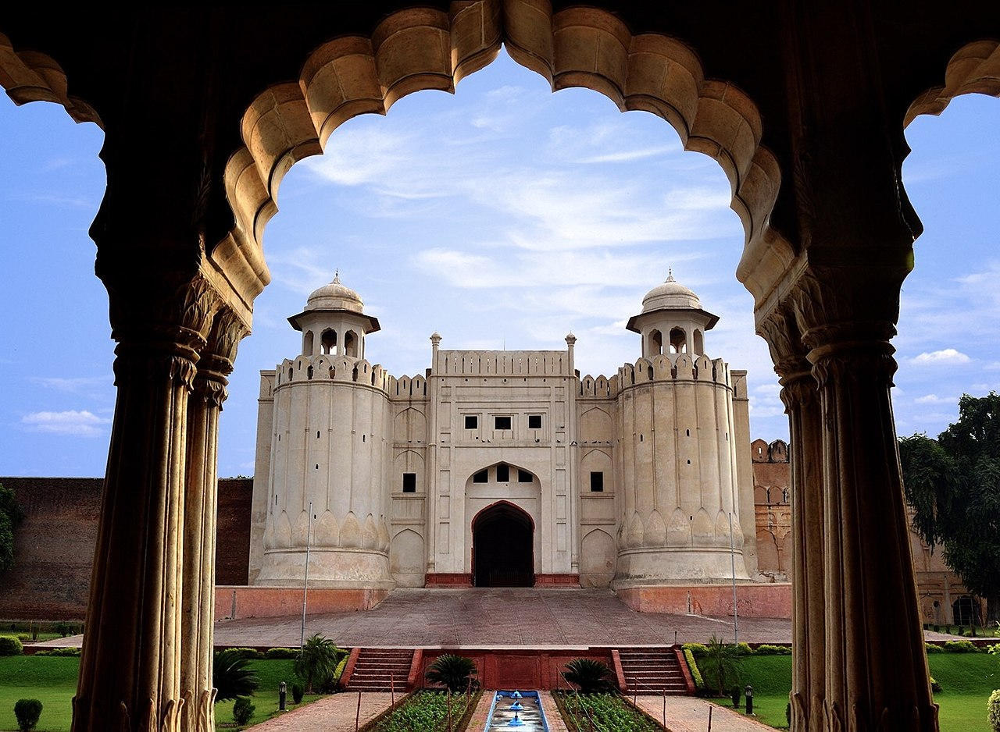
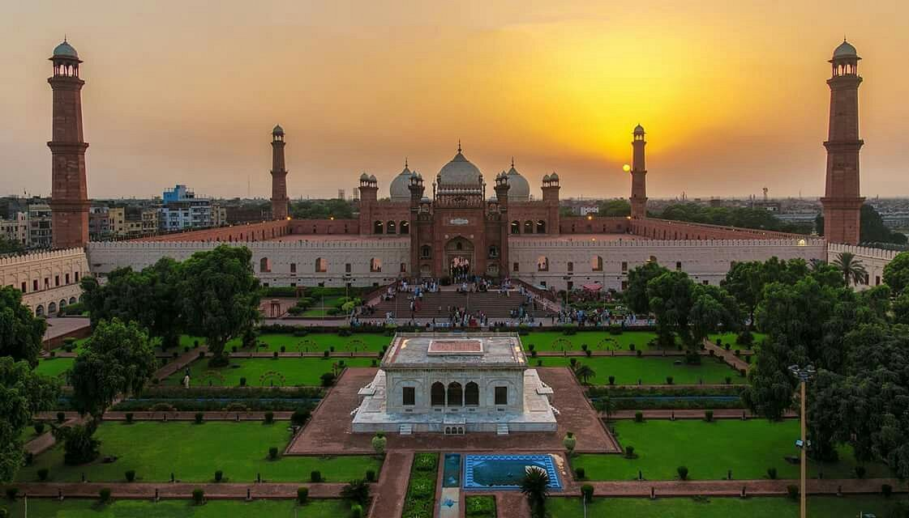
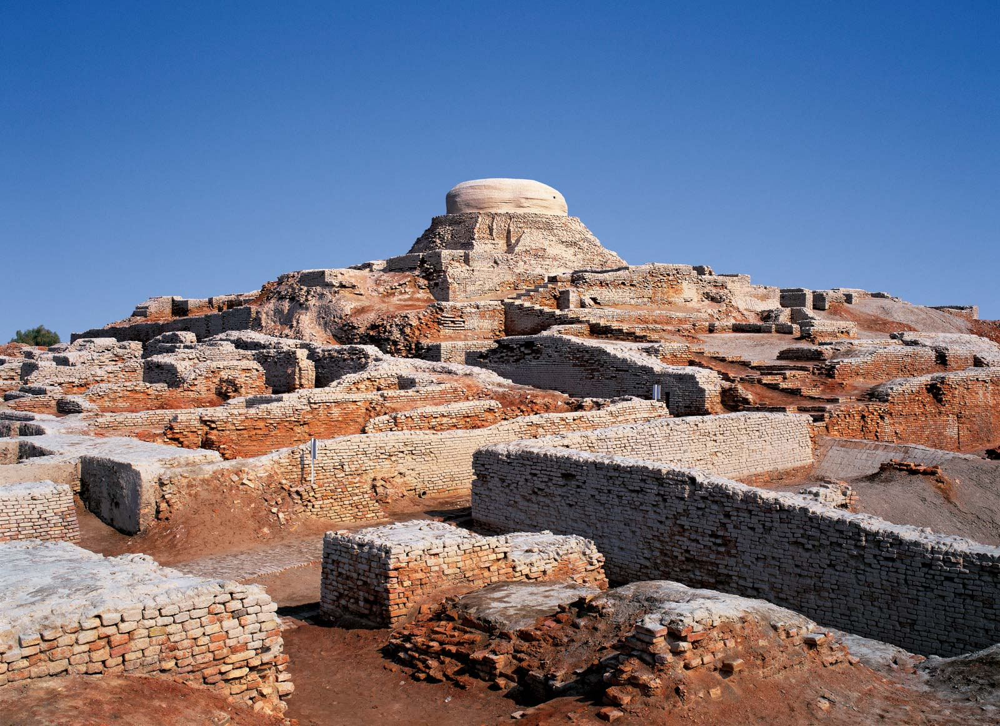
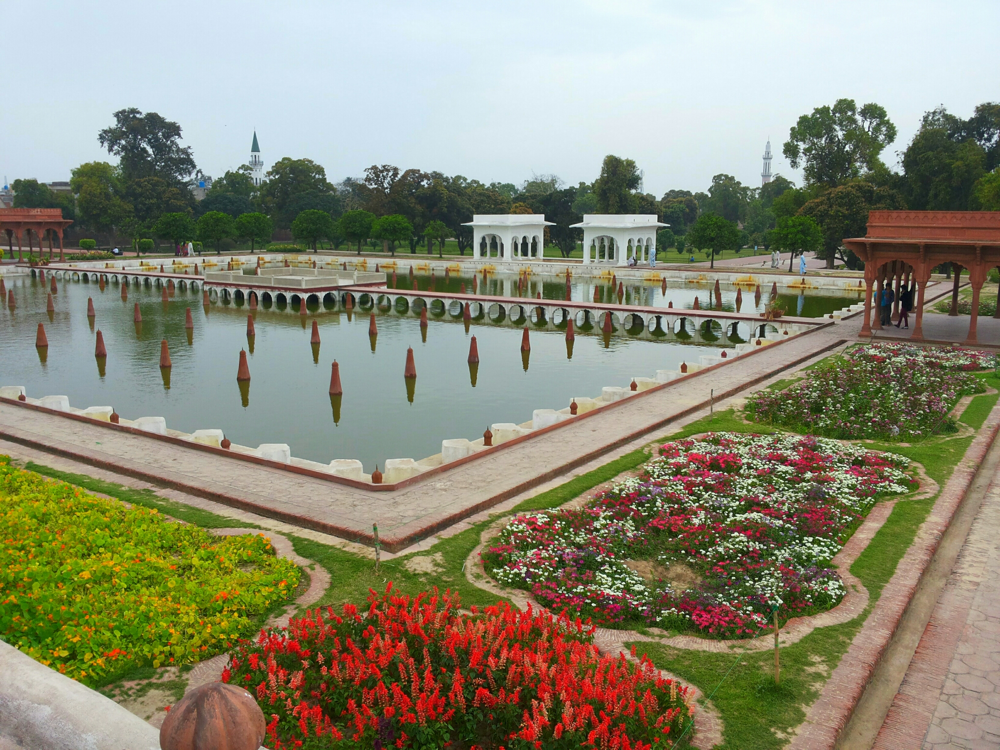
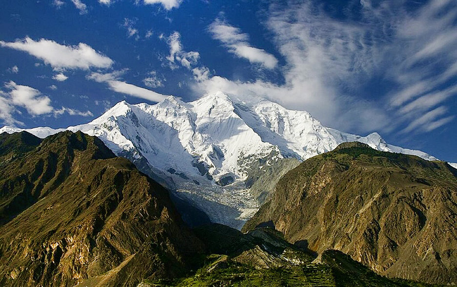
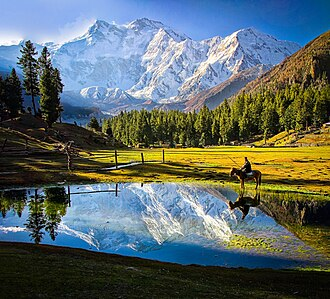

Pakistan's tourism sector has seen remarkable growth in recent years. In just two years, visitor numbers increased by more than 300%, and the country now holds six UNESCO World Heritage Sites. In 2018, the British Backpacker Society ranked Pakistan the number one adventure travel destination in the world, and the World Economic Forum placed it in the top 25% of global destinations for heritage tourism.
In 2010, Lonely Planet termed Pakistan "tourism's next big thing." Since then, as security has improved, tourism has surged by more than 300%. Condé Nast Traveller ranked Pakistan the Best Holiday Destination for 2020 and declared it the third-highest potential adventure destination in the world.
Lahore Fort
A citadel in the heart of Lahore's Walled City, the Lahore Fort spreads over 20 hectares and contains 21 notable monuments. Originally built in the 11th century and substantially rebuilt by Emperor Akbar in 1566, it displays a magnificent blend of Islamic and Hindu architecture.
The grand Alamgiri Gate, built by Emperor Aurangzeb, faces the iconic Badshahi Mosque — together forming one of the most dramatic architectural ensembles in South Asia.
Visit Lahore
Lake Saif-ul-Muluk
Located at an elevation of 3,224 metres above sea level at the northern end of the Kaghan Valley, Lake Saif-ul-Muluk is one of the highest lakes in Pakistan. Named after a legendary prince from a Sufi poem, the lake is surrounded by snow-capped peaks and is accessible from the town of Naran during summer.
Explore Northern Pakistan
Famous Landmarks

Badshahi Mosque
One of the world's largest mosques, an iconic symbol of Mughal grandeur in Lahore.
Learn More →
K2
The world's second-highest peak at 8,611 m, a legendary challenge for mountaineers in Gilgit-Baltistan.
Learn More →
Mohenjo-daro
Ruins of one of the world's earliest urban civilisations, dating back to 2500 BCE.

Shalimar Gardens
A UNESCO-listed Mughal garden in Lahore, designed by Emperor Shah Jahan with three terraced levels.

Rakaposhi
Rising nearly 7,788 m in the Karakoram, Rakaposhi descends 6,000 m from summit to base in an unbroken sweep.

Fairy Meadows
A stunning grassland at the foot of Nanga Parbat, offering some of the most dramatic views in the world.
Learn More →The Beauty of Pakistan
Experience Pakistan's incredible landscapes and cultural richness.